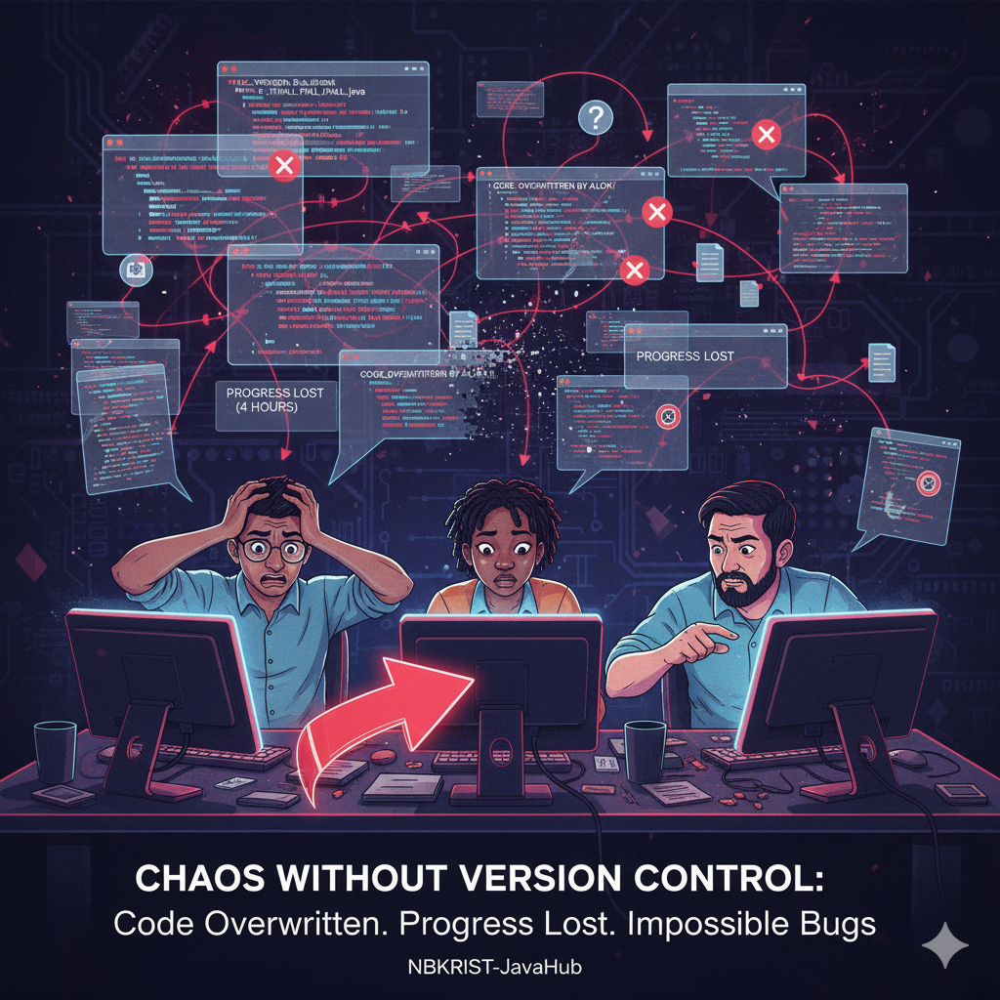
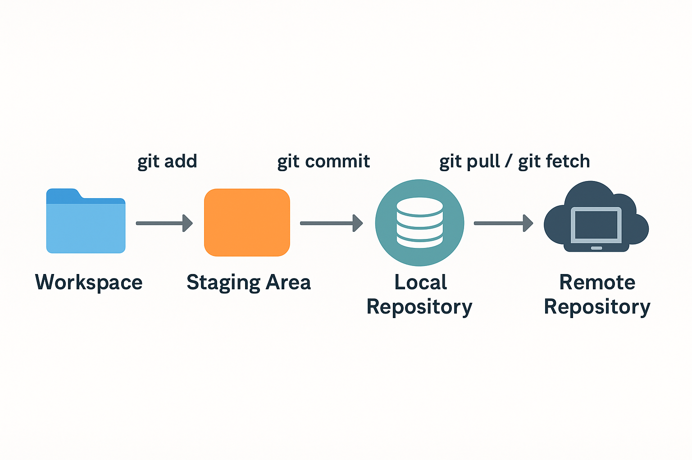
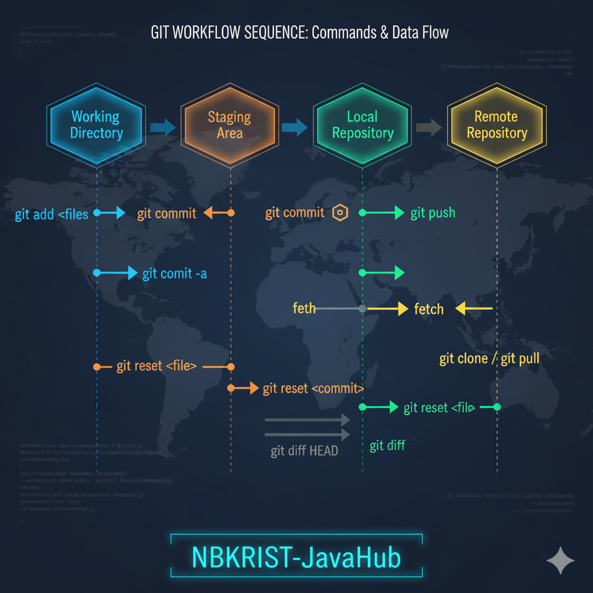

1. Why We Need Version Control?
Version control is essential for tracking changes in software projects. It allows developers to experiment, collaborate, and safely roll back to previous versions if something goes wrong.
In the fast-paced environment of Software projects, version control ensures every change is accounted for and managed systematically.
2. Issues Without Version Control
Without version control, teams risk overwriting code, losing progress, and struggling with multiple file versions. Collaboration becomes chaotic, and tracking bugs or feature history becomes nearly impossible.

3. What is Version Control? Why Git?
Version control manages changes to source code over time. Git is a distributed version control system designed for speed, flexibility, and reliability.
Git allows Software developers to work offline, branch easily, and integrate their changes smoothly. It’s the backbone of modern software development.

4. The Git File Workflow
Git workflow: create files, add them to staging, commit them, and push to remote repositories. This ensures clarity, control, and collaboration for every project.
5. Git Command Developer References
Quick reference for commonly used Git commands that every NBKRIST student should know:
| Command | Description |
|---|---|
git init |
Initialize a new Git repository in your local directory. |
git add . |
Add all modified and new files to staging. |
git commit -m "message" |
Commit staged changes with a message. |
git status |
Show current state of working directory and staging area. |
git log |
Display the commit history of the repository. |
git branch |
List, create, or delete branches. |
git merge branchname |
Merge a branch into the current branch. |
git remote add origin <url> |
Link your local repo to a remote repository. |
git push -u origin main |
Push committed changes to GitHub. |

